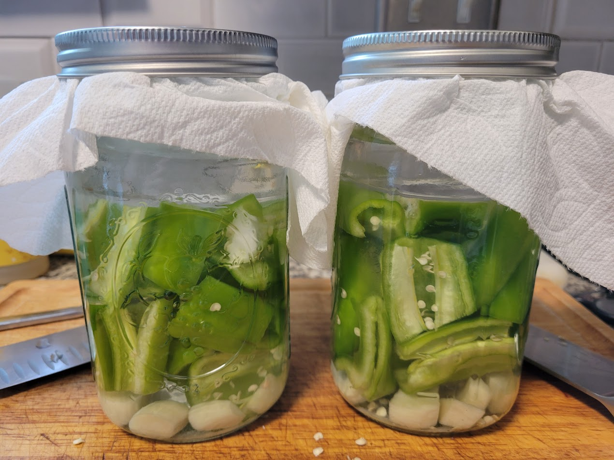
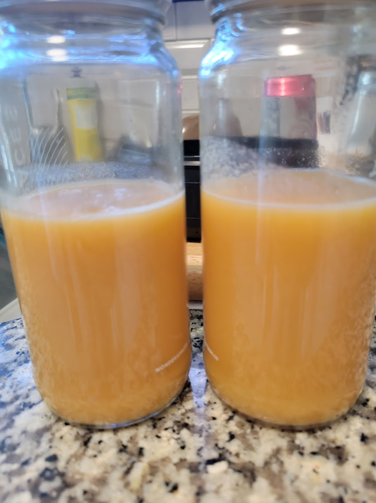

Lactofermentation

Note: given the nature of fermentation, it is important to understand the mechanisms behind what is happening,
and ensure you are taking all the necessary precautions to make your process as safe as possible.
While these steps I have laid out are simple, an absolute beginner should always cross-check what I have
said here against other, more reputable sources available. Never take a single source as gospel,
especially not when your health is on the line!
Based solely on its name, lactofermentation may sound like a complicated process,
but it's based on a very simple principle: salt is good at killing bad things. In
this case, we're not talking about ghosts or demons, but rather the simple
bacteria and fungi that can infest and spoil your fresh veggies. But the real
miracle is that, when salt concentrations are properly controlled, you can
create a brine that kills those bad microorganisms while allowing good
(probiotic) ones to thrive!
The good guys, in this case, are a collection of bacteria of the genus
lactobacillius. They thrive in the salty, anaerobic environments that kill
any bad guys that might be around, AND they feed on carbohydrates like starch and
sugar to produce lactic acid, which keeps them from coming back.
Luckily, these probiotic powerhouses occur naturally pretty much everywhere,
and they're not too fussy about precise salt contents. With just a kitchen
scale and a little bit of math, we can make a perfect home for them to do their work.
Ingredients/Equipment
- Vegetable of choice
- Salt
- Filtered Water
- Kitchen Scale (preferably measuring in grams)
- Non-reactive container (a classic Mason jar works great)
Generally speaking, you want to go with a firm vegetable that can be eaten raw, like a
carrot or pepper. The brine and fermentation process causes veggies to soften over time,
so more watery veggies like tomatoes tend to be a poor choice. Perhaps the most famous
vegetable that is still commonly lactofermeted is cabbage, which is readily available
in two common dishes from two drastically different cuisines: sauerkraut and kimchi.
Steps
- Wash Your Veggies: Ensure that any dirt or other foreign
contaminents are cleaned off
- Peel or Chop, as Needed: Remove any inedible parts
from your veggies before fermenting them, so you don't have to later! Cut into
segments to better fit your container of choice, and/or to match the size you want your
final product to be. Note that smaller pieces will result in a higher surface area,
which can lead to faster fermentation, but also more water absorption.
- Place in Your Container: Place your veggies in a clean container, like a
Mason jar. This is a great time to add extra flavorings like peppercorns or mustard
seeds. Avoid overcrowding; it can make dealing with the process much more annoying.
The extra effort to prep a second container can save you from headaches down the line!
- Cover Veggies with Filtered Water: Leave some extra headroom at the top of
the jar, but make sure you have enough water to completely submerge your veggies.
- Weigh your Contents: Place a separate container, like a large bowl,
on a kitchen scale and tare. It is highly recommended to have the scale in grams if possible,
as it will make the upcoming math much easier. Pour the entire contents of your first container
(veggies, water, and all) into the second container, and record their weight.
- Multiply, and Add Salt: The ideal ratio we're targetting is around 2-3%.
The actual amount you use is a matter of personal preference, with more salt obviously
resulting in a saltier final product. 2.5% is a good starting point for beginners. To attain
this ratio, simply multiply the total weight you recorded in the previous step by 0.025.
This result is the amount of salt you need to add. Sprinkle that amount over your
veggie/water mixture, and stir to thoroughly combine.
- Transfer Back to Your Container: Depending on the size of your veggie
pieces and the mouth of your container, it may be easier to transfer the solids with
your (clean!) hands, and then pour the brine over the top. Also note that all of the salt
may not have dissolved in the initial mixing. If this is the case, make sure to scrape as
much as you can into the container to ensure the proper ratio is maintained.
- Cover: Maintaining an anaerobic (free of oxygen)
environment for your ferment is extremely important. We accomplish this by ensuring
all of our veggies are completely submerged at all times during the fermentation
process. If your veggies are tending to float to the top and cannot be held in place by
wedging them, you may need to weigh them down instead.
Fermentation weights are available for purchase that are designed for use in
typical widemouth jars, but for beginners, a simple snack-sized Ziploc bag with a little
bit of water in it will work in a pinch.
- Ferment: Keep your fermentation vessels in a warm place away from
sunlight. Ensure the contents remain submerged at all times. If you have a lid in place,
you may wish to burp your jars on a daily basis to prevent excess buildup of carbon dioxide,
but this is not generally necessary. The surface of your brine may begin to grow a thin, delicate
film of a powdery white to light brown substance. This is called kahm yeast and is harmless.
However, if the surface begins to grow fuzzy, splotchy, and dark or brightly colored
clumps, you likely have mold growing. In general, it's best not to risk it once this occurs.
Throwing out a few dollars worth of produce is generally far better than risking illness
or a trip to the hospital! Trust your eyes and your nose, and when in doubt, throw it out!
- Store, Use, and Enjoy!: Fermentation rates will vary based on many factors,
including temperature. In general, it's best to start sampling small amounts of your veggie starting
about 7 days after fermentation begins. If it tastes good then, great! If not, keep checking every
day until it reaches your desired flavor. The ideal point will usually occur sometime between 7 and 14 days.
Also make note that even when refridgerated, the flavor will continue to evolve, so there's no harm in
stopping just a bit before your desired flavor.
Once fermentation is complete, your veggies can be consumed immediately, or placed in a sealed container in the
refridgerator, where they can last around 2 months. Fermented peppers and complementary
ingredients can be blended into a delicious hot sauce, which can then be bottled and placed in the
fridge for a similar length of time.
